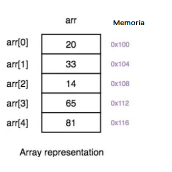
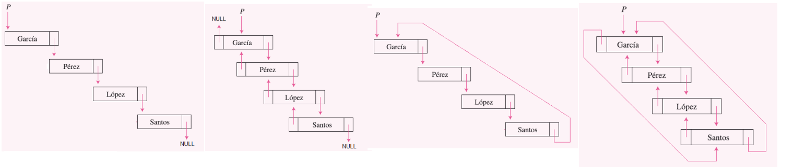
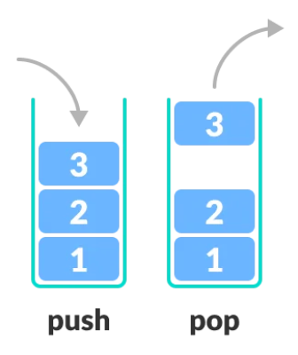
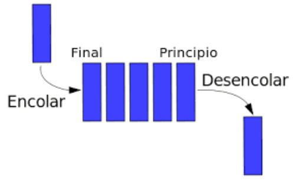
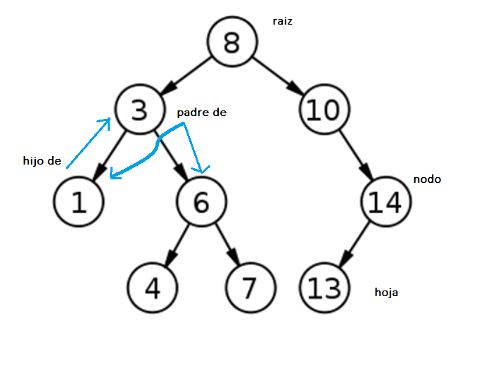
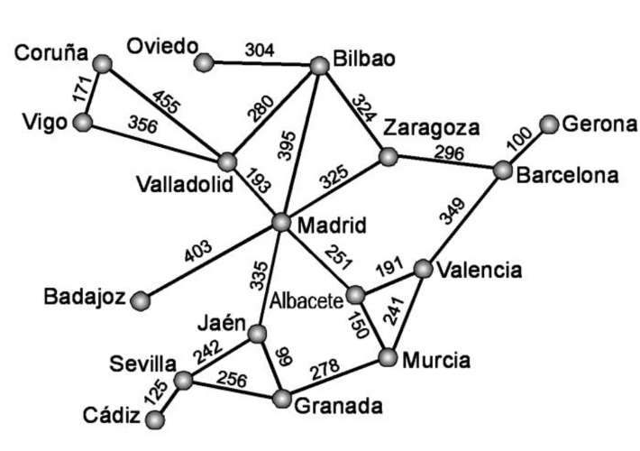
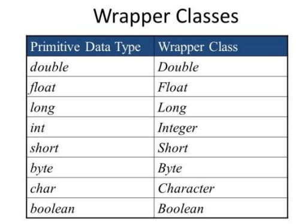
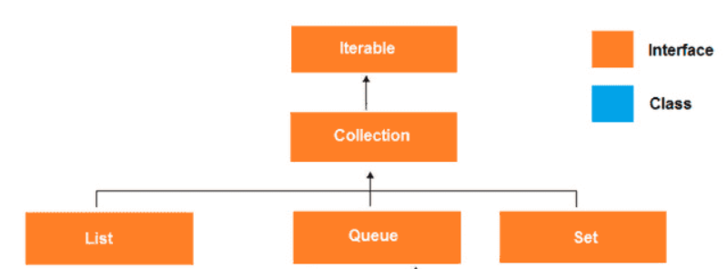
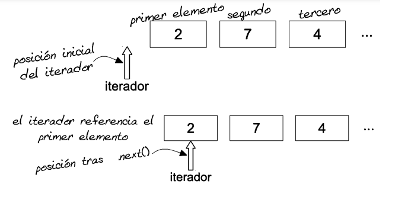

Estructuras de datos¶
La estructura de datos es una forma de almacenar y organizar datos de manera eficiente, de modo que las operaciones requeridas en ellos se puedan realizar de manera eficiente con respecto al tiempo y la memoria. Simplemente, la estructura de datos se utiliza para reducir la complejidad (principalmente la complejidad del tiempo) del código.
Las estructuras de datos pueden ser de dos tipos:
- Estructura de datos estática
- Estructura de datos dinámica
Estructuras de datos estáticos¶
En la estructura de datos estática, el tamaño de la estructura es fijo. El contenido de la estructura de datos se puede modificar pero sin cambiar el espacio de memoria que se le asigna. Un ejemplo de estas estructuras son los arrays que vimos en la unidad 5.

Aunque los arrays son muy útiles como hemos estudiado, tenemos varios inconvenientes:
- Difícil de adaptar al tamaño del problema: Se ha de conocer el tamaño al crear el array, implica que o se pierde algo de espacio o es posible que se quede pequeño…
- Posibles problemas de memoria: En caso de gran cantidad de objetos a gestionar se ha de reservar memoria contigua, y en ocasiones esto no es sencillo.
- Manejo complejo: La inserción y borrado de elementos es compleja.
Estructuras de datos dinámicas¶
En la estructura de datos dinámica, el tamaño de la estructura no es fijo y puede modificarse durante las operaciones realizadas en él. Las estructuras de datos dinámicas están diseñadas para facilitar el cambio en tiempo de ejecución y resolución de muchos algoritmos. Algunas de estas estructuras son:
Listas lineales¶
Una lista es una colección, originalmente vacía, de elementos u objetos de cualquier tipo no necesariamente consecutivos en memoria, que durante la ejecución del programa pueden crecer o decrecer elemento a elemento según las necesidades previstas en el mismo. Una lista está formada por un número variable de datos (elementos) de un mismo tipo, ordenados según una secuencia lineal. Cada elemento, salvo el primero, tiene un predecesor en la lista. Todos los elementos, salvo el último, tienen un sucesor.
En función de la información que cada elemento de la lista almacene respecto a la localización de sus antecesores y/o predecesores, las listas pueden clasificarse en:
- listas lineales simplemente enlazadas
- listas lineales doblemente enlazadas
- listas circulares simplemente enlazadas
- listas circulares doblemente enlazadas.
Elegir el tipo de lista depende de las necesidades del problema, con mayor coste de memoria para las estructuras más complejas

Pilas¶
Una pila es una lista en la que todas las inserciones y supresiones se hacen en un extremo de la lista. Un ejemplo de esta estructura es una pila de platos. En ella, el añadir o quitar platos se hace siempre por la parte superior de la pila. Esta estructura utiliza el principio LIFO (last-in first-out), último en entrar, primero en salir

Son estructuras necesarias en la resolución de muchos algoritmos, como puede ser la evaluación de expresiones matemáticas, manejo de llamadas a funciones.
Colas¶
Una cola es una lista lineal en la que todas las inserciones se hacen por un extremo de la lista (por el final) y todas las supresiones se hacen por el otro extremo (por el principio). Por ejemplo, una fila en la caja del supermercado. Este tipo de listas recibe también el nombre de listas FIFO (first in first out – primero en entrar, primero en salir)

Tanto pilas como colas, son utilizadas en muchos algoritmos en sistemas operativos entre otros
Arboles¶
La estructura de datos árbol al contrario que las listas es una estructura de datos no lineal. Las listas tienen un orden impuesto en sus elementos teniendo como mucho un predecesor y un sucesor. Los árboles pueden tener dos o más sucesores.
Un árbol consiste en un conjunto de nodos o vértices y un conjunto de aristas

Permiten crear algoritmos muy eficientes de búsqueda y ordenación, así como resolución de problemas de IA entre otros.
Grafos¶
Los grafos son estructuras de datos no lineales que representan relaciones entre objetos. Debido a que no son estructuras lineales, no existe jerarquía en las relaciones. Un grafo G(V,A) es un conjunto de vértices (V) y arcos (A).

Permiten resolver problemas como puede ser el camino más corto o algoritmos para los motores de búsqueda de páginas web. En la Api de Java no existen los Grafos, pero si que tenemos librerías que las implementan
List¶
Documentación oficial Collections Java

Una lista se puede ver como un array ya que es una secuencia de elementos o colección ordenada que te permite tener elementos en posiciones consecutivas.
En Java List es una interfaz Java.util.List que extiende de Collection. Siempre conserva el orden de los elementos. Los elementos contenidos en una lista se pueden insertar, acceder, iterar y eliminar de acuerdo con el orden en que aparecen internamente en la lista. El orden de los elementos es la razón por la cual esta estructura de datos se llama List. Cada elemento en una lista de Java tiene un índice, al igual que ocurría con los arrays.
La interfaz de lista se implementa mediante las clases ArrayList, LinkedList, Vector y Stack. Es decir, dado que List es una interfaz, no se puede crear una instancia directamente. Sin embargo, uno puede crear objetos de aquellas clases que han implementado esta interfaz e instanciarlos. Por ejemplo:
List a = new ArrayList();
List b = new LinkedList();
List c = new Vector();
List d = new Stack();
De estas implementaciones, ArrayList es la más utilizada.
ArrayList¶
La primera clase de la que vamos a hablar es ArrayList. Un ArrayList como su nombre indica basa su implementación de una lista en un array. Es un array dinámico en tamaño (es decir, de tamaño variable), pudiendo agrandarse el número de elementos o disminuirse de forma automática. Implementa todos los métodos de la interfaz List y permite incluir elementos null.
Un ArrayList no permite almacenar tipos de datos primitivos, solo puede almacenar objetos. Al contrario que un array que permitía almacenar ambos.
Sin embargo, desde Java 5, las primitivas se convierten automáticamente en objetos, gracias a los Wrappers.

ArrayList forma parte de Collection en Java. Por lo tanto, a diferencia de los arrays que para acceder a los elementos se hacía usando [], en ArrayList tenemos un conjunto de métodos para acceder a los elementos y modificarlos.
Crear un ArrayList¶
Para crear un ArrayList en IntelliJ escribimos:

Si nos fijamos nos aparece una <E>, esto quiere decir que cuando creamos un ArrayList no le estamos diciendo el tipo como hacíamos con los arrays: int[] array;. Por tanto, para crear un ArrayList que almacena objetos necesitamos decirle qué tipo de datos vamos a almacenar en nuestra lista.
// Crear una ArrayList de personas
ArrayList<Persona> personas = new ArrayList<>();
//creamos un ArrayList de String
ArrayList<String> hobbies=new ArrayList<String>();
//Error---> No se puede definir con tipos primitivos
ArrayList<int> listaEntero= new ArrayList<int>();
//Hay que utilizar las clases Wrapper
ArrayList<Integer> listaEntero= new ArrayList<Integer>();
En el ejemplo hemos creado una lista que contendrá elementos de tipo String. Y si nos fijamos no le hemos especificado ningún tamaño como hacíamos en los arrays puesto que Java maneja el tamaño por nosotros automáticamente.
En muchas ocasiones veremos definido el tipo de la instancia como la interface List
// Crear una ArrayList de personas
List<Persona> personas = new ArrayList<>();
//creamos un ArrayList de String
List<String> hobbies=new ArrayList<>();
//Hay que utilizar las clases Wrapper
List<Integer> listaEntero= new ArrayList<>();
Si no indicamos el tipo, estamos creando un ArrayList de tipo Object, en el que cabe cualquier elemento
ArrayList lista=new ArrayList();
lista.add("hola");
lista.add(3);
lista.add(new Persona("Maria",23));
Métodos principales de ArrayList¶
| MÉTODO | DESCRIPCIÓN |
|---|---|
| size() | Devuelve el número de elementos (int). |
| add(x) | Añade el objeto X al final. Devuelve true. |
| add(posición, X) | Inserta el objeto X en la posición indicada desplazando hacia adelante el resto de elementos de la colección. |
| get(posición) | Devuelve el elemento que está en la posición indicada. |
| remove(posición) | Elimina el elemento que se encuentra en la posición indicada desplazando hacia atrás el resto de los elementos de la colección. Devuelve el elemento eliminado. |
| remove(X) | Elimina la primera ocurrencia del objeto X. Devuelve true si el elemento está en la lista. |
| clear() | Elimina todos los elementos. |
| set(posición, X) | Sustituye el elemento que se encuentra en la posición indicada por el objeto X. Devuelve el elemento sustituido. |
| contains(x) | Comprueba si la colección contiene al objeto X. Devuelve true o false. |
| indexOf() | Devuelve la primera posición del objeto X. Si no existe devuelve -1. |
| lastIndexOf(X) | Devuelve la última posición del objeto X. Si no existe devuelve -1. |
Añadir ítem al ArrayList¶
Partimos de la siguiente clase
class Persona {
private String nombre;
private int edad;
public Persona(String nombre, int edad) {
this.nombre = nombre;
this.edad = edad;
}
public String getNombre() {
return nombre;
}
public int getEdad() {
return edad;
}
@Override
public String toString() {
return "Persona [nombre=" + nombre + ", edad=" + edad + "]";
}
Para agregar un ítem tenemos el método add de la interface List:
// Crear una ArrayList de personas
ArrayList<Persona> personas = new ArrayList<>();
// Agregar algunas personas a la lista
personas.add(new Persona("Juan", 25));
personas.add(new Persona("Maria", 30));
personas.add(new Persona("Carlos", 22));
El método add agrega automáticamente el elemento en la lista. ArrayList es el que tiene toda la funcionalidad sobre dónde guardarlo (posición) y cantidad de espacio para asignar. Eso es abstracto para nosotros y no tenemos que preocuparnos por ello.
Recorrer los elementos del ArrayList¶
Como ocurre con el Array, podemos recorrer la lista de varias formas:
// Mostrar la lista mediante foreach
System.out.println("Lista de Personas:");
for (Persona persona : listaPersonas) {
System.out.println(persona);
}
//Mostrar la lista mediante for
System.out.println("Lista de Personas:");
for(int i=0;i<listaPersonas.size();i++)
System.out.println(listaPersonas.get(i));
Interface Iterator: iterar por la lista¶
Si nos fijamos en la jerarquía de clases para Colletions, vemos que también tenemos en la cabeza la interface Iterator.

Iterator proporciona un mecanismo para iterar sobre los elementos de una colección de manera secuencial, permitiendo acceder a los elementos de la colección uno a uno sin exponer la estructura interna de la colección.
La interfaz Iterator generalmente consta de tres métodos clave:
hasNext(): Este método devuelve un valor booleano que indica si hay más elementos en la colección para ser iterados. Si devuelve true, significa que hay al menos un elemento más para ser recuperado; de lo contrario, si devuelve false, se ha alcanzado el final de la iteración.
next(): Este método devuelve el próximo elemento de la colección durante la iteración. Cada llamada a este método avanza la iteración al siguiente elemento.
remove(): Algunas implementaciones de Iterator también incluyen el método remove(), que elimina el elemento actual de la colección durante la iteración.

De esta forma, cualquier esctructura que implemente Iterable, puede recorrerse de la siguiente forma
//obtenemos el iterador del ArrayList
Iterator<Persona> iterator=listaPersonas.iterator();
Persona persona;
//mientras queden elementos
while (iterator.hasNext()){
//elemento siguiente
persona=iterator.next();
System.out.println(persona);
}
Iterator-foreach-for¶
En Java, un iterator se utiliza en lugar de un bucle foreach en ciertos casos debido a las limitaciones
de este último en términos de modificación de la colección durante el recorrido. Aquí hay algunas razones para preferir un iterator en ciertos escenarios:
- Modificación durante el recorrido:El bucle foreach no permite modificar la colección mientras se está iterando. Si intentas agregar o eliminar elementos durante un bucle foreach, se lanzará una excepción
ConcurrentModificationException.
//----MAL----
//el siguiente código genera un error cuando borramos
ArrayList<String> lugares = new ArrayList<>();
lugares.add("Roma");
lugares.add("Toronto");
lugares.add("Amsterdam");
lugares.add("París");
lugares.add("Rodas");
for(String s: lugares)
if(s.toLowerCase().contains("ro"))
lugares.remove(s);
Por otro lado, si intentamos hacerlo con un for, aunque no se produzcan errores se producen situaciones inesperadas
//----MAL----
ArrayList<String> lugares = new ArrayList<>();
lugares.add("Roma");//a eliminar
lugares.add("Toronto");//a eliminar
lugares.add("Amsterdam");
lugares.add("París");
lugares.add("Rodas");//a eliminar
//eliminamos aquello que contengan 'ro'
for(int i=0;i<lugares.size();i++){
//cuando elimina 'Roma', la posición de 'Toronto' pasa a la posición 0, por lo que se lo salta
//cuando el siguiente ciclo es i=1
if(lugares.get(i).toLowerCase().contains("ro"))
lugares.remove(i);
}
System.out.println(lugares);
//[Toronto, Amsterdam, París]...toronto no tendría que aparecer
iterator
* El iterator, en cambio, proporciona métodos específicos (remove()) que permiten modificar la colección de manera segura durante el recorrido.
//----CORRECTO---
ArrayList<String> lugares = new ArrayList<>();
lugares.add("Roma");
lugares.add("Toronto");
lugares.add("Amsterdam");
lugares.add("París");
lugares.add("Rodas");
Iterator<String> it=lugares.iterator();
while(it.hasNext()){
String s=it.next();
if(s.toLowerCase().contains("ro"))
it.remove();
}
System.out.println(lugares);
//[Amsterdam, París]
- Personalización del recorrido: El
iteratorproporciona más flexibilidad en términos de personalización del recorrido. Puedes utilizar métodos como hasNext(), next(), y remove() para controlar el flujo del recorrido de manera más detallada. - Compatibilidad con tipos específicos: En algunas situaciones, es posible que desees utilizar un
iteratorespecífico para un tipo particular de colección, como unListIteratorpara listas. Esto permite acceder a métodos adicionales que son específicos de esa implementación de colección.
A pesar de estas ventajas, en muchos casos, el bucle foreach es más simple, más conciso y más legible. Por lo tanto, la elección entre un iterator y un bucle foreach depende del contexto y de los requisitos específicos de la manipulación de la colección en tu código.
Ten en cuenta que las estructuras compatibles con el bucle foreach tienen implementado Iterable
Modificar un ítem en una posición del ArrayList¶
Para modificar sustituir un elemento de la lista, tenemos set, al que le pasamos el indice y el objeto
// Agregar algunas personas a la lista
listaPersonas.add(new Persona("Juan", 25));
listaPersonas.add(new Persona("Maria", 30));
listaPersonas.add(new Persona("Carlos", 22));
Persona teresa=new Persona("Teresa",24);
//sustituye Carlos por Teresa. Recuerda que el primer indice empiza por 0
listaPersonas.set(2,teresa);
Eliminar un ítem de un ArrayList¶
El método remove elimina el elemento de la lista. Tenemos dos opciones:
-
Eliminar por índice: Indicamos la posición del elemento a eliminar
// Agregar algunas personas a la lista listaPersonas.add(new Persona("Juan", 25)); listaPersonas.add(new Persona("Maria", 30)); listaPersonas.add(new Persona("Carlos", 22)); System.out.println("tamaño lista: "+listaPersonas.size());//3 //Eliminamos a Juan listaPersonas.remove(0); System.out.println("tamaño lista: "+listaPersonas.size());//2 -
Eliminar por objeto: En este caso, la clase base del ArrayList tiene que tener sobrecargado el método
equalpara que la clase ArrayList pueda encontrar el primer objeto igual al pasado por parámetro. En nuestro caso, vamos indicar que la clase Persona que dos personas son iguales si su nombre es igual
class Persona {
//.....
@Override
public boolean equals(Object o) {
if (this == o) return true;
if (o == null || getClass() != o.getClass()) return false;
Persona persona = (Persona) o;
return Objects.equals(nombre, persona.nombre);
}
}
// Agregar algunas personas a la lista
listaPersonas.add(new Persona("Juan", 25));
listaPersonas.add(new Persona("Maria", 30));
listaPersonas.add(new Persona("Carlos", 22));
System.out.println("tamaño lista: "+listaPersonas.size());//3
//Eliminamos a Juan
Persona juan=new Persona("Juan",31);
listaPersonas.remove(juan);
System.out.println("tamaño lista: "+listaPersonas.size());//2
Encontrar un elemento en el ArrayList¶
Como ocurre con el anterior, es necesario que la clase base tenga el método equals
El método contains permite saber si existe el item en el ArrayList
Persona juan=new Persona("Juan",31);
//si no existe, lo inserta en la lista
if(!listaPersonas.contains(juan))
listaPersonas.add(juan);
indexof permite averiguar la posisión de un objeto en la lista. Si no existe, devuelve -1
Persona tere=new Persona("Tere",31);
//si no existe, devuelve -1
int pos=listaPersonas.indexOf(tere);
if(pos>=0)
System.out.println(listaPersonas.get(pos));
Copiar todo el contenido del un ArrayList a otro¶
Se puede hacer de varias formas:
//Forma 1
ArrayList<Persona> otraLista = new ArrayList<Persona>();
otraLista.addAll(listaPersonas);
//Forma 2
ArrayList<Persona> otraLista2 = new ArrayList<Persona>(listaPersonas);
//Forma 3 - Copiar un ArrayList a un Array
Persona[] otroArray = new Persona[listaPersonas.size()];
otroArray = listaPersonas.toArray(otroArray);
Ordenar un ArrayList¶
Como nos ocurría con la clase Array, para ordenar una ArrayList, la clase base tiene que implementar la interface Comparable o pasarle un objeto de una clase que implemente Comparator
En nuestro caso, podemos indicar que las personas se comparan por su nombre
class Persona implements Comparable<Persona>{
//.....
@Override
public int compareTo(Persona p) {
return this.nombre.compareTo(p.nombre);
}
// Agregar algunas personas a la lista
listaPersonas.add(new Persona("Juan", 25));
listaPersonas.add(new Persona("Maria", 30));
listaPersonas.add(new Persona("Carlos", 22));
//ordenamos
Collections.sort(listaPersonas);
En el apartado de Interface se ve con más detalle
Ejemplo completo con ArrayList de String¶
public class ProductList {
private ArrayList<String> productosList = new ArrayList<String>();
public void addProduct(String item) {
productosList.add(item);
}
public void printProductList() {
System.out.println("Tenemos " + productosList.size() + " elementos en el arrayList");
for(int i = 0; i < productosList.size(); i++) {
System.out.println(productosList.get(i));
}
}
public void modifyProductItem(int index, String newItem) {
productosList.set(index, newItem);
}
public void removeProductItem(int index) {
String item = productosList.get(index);
productosList.remove(item);
}
public boolean existsItem(String searchItem) {
return productosList.contains(searchItem);
}
public String findItem(String searchItem) {
int index = productosList.indexOf(searchItem);
if (index >= 0) {
return productosList.get(index);
}
return null;
}
}
Main¶
Vamos a crear una clase principal Main con un método mainque imprimirá un menú de opciones relacionadas con la lista de productos y realizará sus respectivas acciones.
public class MainList {
private static Scanner scanner = new Scanner(System.in);
private static ProductList productList = new ProductList();
public static void imprimirMenu() {
System.out.println("0 - Para imprimir menu");
System.out.println("1 - Para imprimir productos");
System.out.println("2 - Para añadir");
System.out.println("3 - Para modificar");
System.out.println("4 - Para eliminar");
System.out.println("5 - Para salir");
}
public static void addItem() {
System.out.println("Inserta el producto: ");
productList.addProduct(scanner.nextLine());
}
public static void modifyItem() {
System.out.println("Inserta número de posición: ");
int index = scanner.nextInt();
scanner.nextLine();
System.out.println("Escribe el nuevo producto:");
String newItem = scanner.nextLine();
productList.modifyProductItem(index, newItem);
}
public static void removeItem() {
System.out.println("Inserta número de posición: ");
int index = scanner.nextInt();
scanner.nextLine();
productList.removeProductItem(index);
}
public static void main(String[] args) {
boolean continuar = true;
int opcion = 0;
imprimirMenu();
while(continuar) {
System.out.println("Elige una opción: ");
opcion = scanner.nextInt();
scanner.nextLine();
switch (opcion) {
case 0:
imprimirMenu();
break;
case 1:
productList.printProductList();
break;
case 2:
addItem();
break;
case 3:
modifyItem();
break;
case 4:
removeItem();
break;
case 5:
continuar = false;
break;
}
}
}
}
Buenas prácticas¶
Si nos fijamos, el método para modificar un ítem de la lista espera recibir un índice o posición donde se encuentra el elemento. Pero eso puede se peligroso, puesto que, sabemos que las posiciones empiezan por 0, pero a lo mejor el usuario no lo sabe y piensan que empiezan por 1. Por tanto, no sabemos a qué posición apunta realmente el índice que recibimos.
Una buena práctica es crear otro método que se le pase el nombre, buscarlo y devolver la posición en la lista:
public void modifyProductItem(String newItem) {
int index = findItem(newItem);
if (index >= 0) {
modifyProductItem(index, newItem);
}
}
private void modifyProductItem(int index, String newItem) {
productosList.set(index, newItem);
}
public int findItem(String searchItem) {
return productosList.indexOf(searchItem);
}
Ejercicio. Haz lo mismo con el método de eliminar elemento.